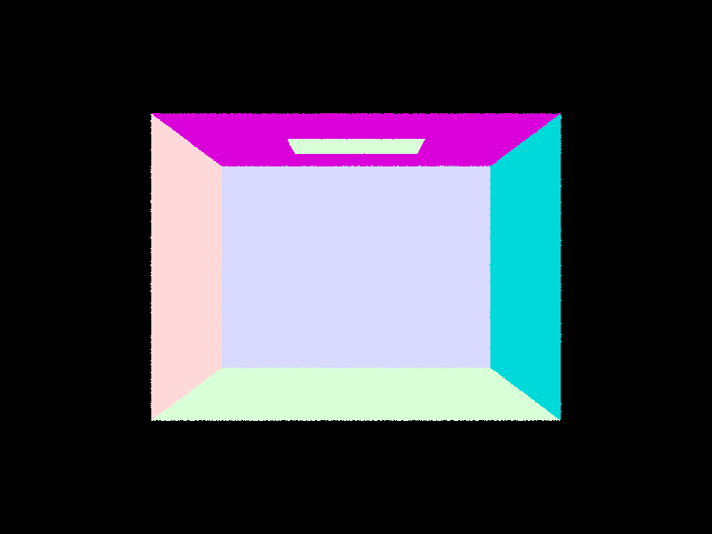
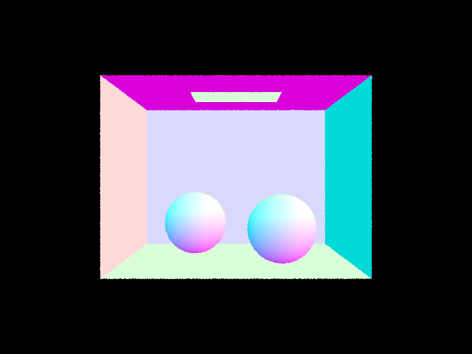
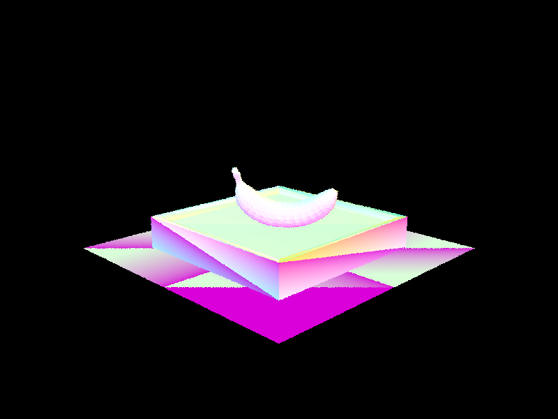

Names: Yash Shah & Vedant Jhawar
Webpage: [Link to your GitHub Pages site]
In this assignment we built a physically-based path tracer from the ground up. Starting from a blank renderer, we incrementally added every major component of the rendering pipeline: camera ray generation, ray–primitive intersection, a bounding volume hierarchy (BVH) for acceleration, direct and indirect illumination via Monte Carlo integration, and finally adaptive sampling to allocate more samples where the image needs them most.
The end result is a renderer capable of producing photorealistic images with soft shadows, color bleeding, and global illumination effects that rasterization-based pipelines fundamentally cannot replicate. Perhaps the most striking insight from building this is how much physical realism follows naturally from one deceptively simple rule: trace a ray, bounce it off surfaces according to their material properties, and average the results. The complexity lies entirely in making that process efficient enough to be practical — which is where the BVH and adaptive sampling come in.
We also found it illuminating (no pun intended) to see the contribution of each individual bounce of light in isolation. The second and third bounces in particular reveal the indirect color bleeding and soft fill light that make rendered scenes look natural rather than artificially flat — something that is impossible to fake cheaply with rasterization.
The rendering pipeline begins at the pixel. For each pixel in the output image,
we generate one or more camera rays and average their estimated radiance to
produce the final color. Concretely, PathTracer::raytrace_pixel(x, y)
samples ns_aa random 2D offsets within the pixel using a uniform
grid sampler, normalizes each sample to [0,1]² image coordinates,
and calls Camera::generate_ray() to produce a world-space ray for
each sample. The per-ray radiance estimates are averaged into a Monte Carlo
estimate of the pixel's true color.
Camera::generate_ray(x, y) maps normalized image coordinates to a
ray in three steps. First, the 2D image coordinate is mapped to a point on the
virtual camera sensor, which sits on the z = −1 plane in camera space.
The sensor spans
[−tan(hFov/2), tan(hFov/2)] horizontally and
[−tan(vFov/2), tan(vFov/2)] vertically, so the mapping is:
cam_x = (2x − 1) · tan(hFov / 2)
cam_y = (2y − 1) · tan(vFov / 2)
This places (0,0) at the sensor's bottom-left and
(1,1) at its top-right, consistent with the convention that
normalized image coordinates have their origin at the bottom-left.
The camera-space ray direction is then (cam_x, cam_y, −1),
normalized. Finally, the direction is rotated into world space using the
camera-to-world matrix c2w, and the ray's origin is set to the
camera position pos. The ray's min_t and
max_t are initialized to nClip and fClip
respectively, so only geometry within the viewing frustum is considered.
Once a ray is in the scene, it is tested against every primitive (triangles and
spheres) to find the closest intersection. The intersection records the hit
distance t, the surface normal, the material (BSDF), and a pointer
to the primitive. This information is then used by the lighting routines in later
parts to shade the point.
We implemented ray–triangle intersection using the Möller–Trumbore algorithm, which solves for the intersection parameter t and the barycentric coordinates (u, v) simultaneously without explicitly computing the plane equation of the triangle.
Given triangle vertices p1, p2, p3 and a ray with origin o and direction d, we define the edge vectors and a helper vector:
e1 = p2 − p1
e2 = p3 − p1
s = o − p1
s1 = d × e2
s2 = s × e1The algorithm then solves the system in closed form:
[ t ] 1 [ dot(s2, e2) ]
[ u ] = ——————————— · [ dot(s1, s) ]
[ v ] dot(s1, e1) [ dot(s2, d) ]
The third barycentric coordinate is recovered as w = 1 − u − v.
An intersection is valid when all of the following hold:
r.min_t ≤ t ≤ r.max_t (within the ray's active range)u ≥ 0, v ≥ 0, w ≥ 0 (point lies inside the triangle)dot(s1, e1) ≠ 0 (ray is not parallel to the triangle plane)
When a valid intersection is found in Triangle::intersect(), we
update r.max_t = t so subsequent intersection tests automatically
discard farther hits. The surface normal at the intersection is computed by
interpolating the three vertex normals using the barycentric coordinates:
n = u·n1 + v·n2 + w·n3This gives smooth per-pixel shading even on coarse meshes.
Ray–sphere intersection reduces to solving a quadratic equation. For a sphere centered at o with radius r and a ray p(t) = ray.o + t·ray.d, substituting into the sphere equation yields:
a = dot(d, d)
b = −2 · dot(o − ray.o, d)
c = dot(o − ray.o, o − ray.o) − r²
discriminant = b² − 4ac
If the discriminant is negative there is no intersection. Otherwise the two
roots give two candidate t values; we pick the smaller one that still
falls within [min_t, max_t], falling back to the larger root if the
smaller one is out of range. The surface normal at the hit point is simply the
normalized vector from the sphere center to the intersection point, which is
computed analytically via the built-in normal() helper.
The images below show several small .dae scenes rendered with
normal shading after completing Part 1. Colors encode the surface normal direction
at each pixel (R=X, G=Y, B=Z), providing a direct visual check that ray
generation and intersection are working correctly.


